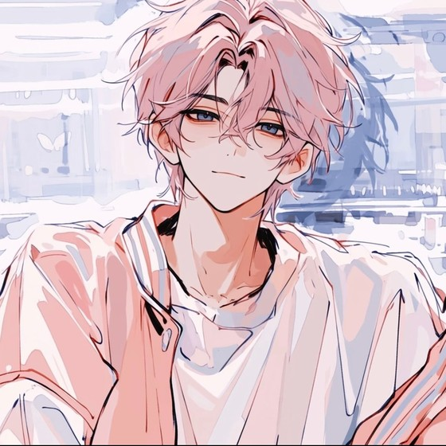

关于我
文字与记录之外，一个还在慢慢长大的普通人。
HELLO, THIS IS ME
你好，我是 L小旭。
LEARNING TRACK
正在学的东西
这张表每隔一阵就会变一次 —— 变的是百分比，不变的是还在往前走。
CONTACT
想找我的话
「写下来的东西不一定要有意义，能被记住就已经很好。」

文字与记录之外，一个还在慢慢长大的普通人。
HELLO, THIS IS ME
LEARNING TRACK
这张表每隔一阵就会变一次 —— 变的是百分比，不变的是还在往前走。
CONTACT
「写下来的东西不一定要有意义，能被记住就已经很好。」